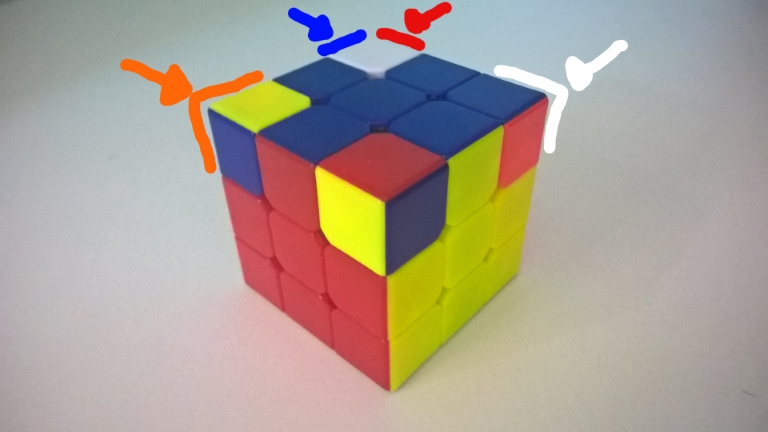
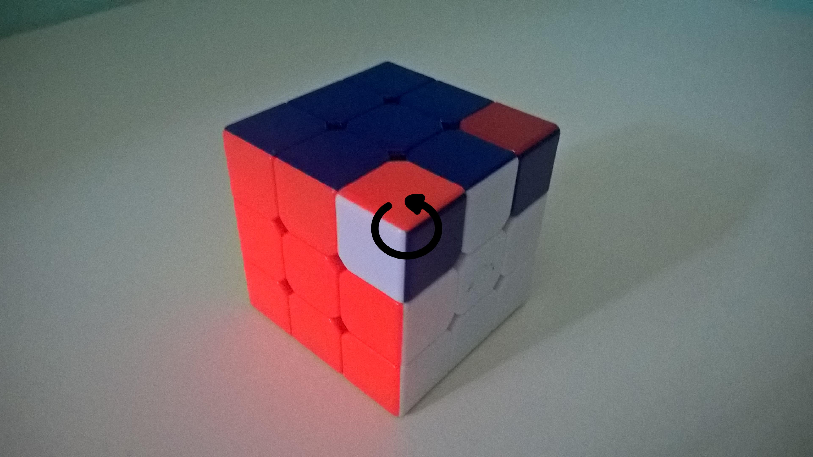

Montando o Rubik's Cube
5 - A Cruz no Topo
Não se preocupe com a quinas, apenas com a peças da cruz
6 - Alinhamento da Cruz no Topo
Não se preocupe com a quinas, apenas com a peças da cruz
- Analise o alinhamento da cruz para com os outros centros, tudo deve estar devidamete alinhado; Gire o topo até achar a 1, 0 ou 2 alinhamentos, nessa ordem de preferência
- Alinhamento: R U R' U R U2 R'


-> |
Obs: Analise novamente e busque os alinhamentos na mesma ordem de preferência quantidade de alinhamentos possível (Isso pode levar no máximo 3 movimentos)
7 - Posicionando as Quinas
- Sem girar nada, procure qual quina está na posição correta, levando em consideração suas três cores e os três centros mais próximos
- Deixe-a do lado direito Caso não exista uma quina na posição correta, deixe qualquer uma no lado direito
- Posicionando as Quinas: U R U' L' U R' U' L
|  | -> |
Obs: Você pode ter que repetir esse movimento até 3 vezes; repita-o até que todas as quinas estejam na posição correta
8 - Subindo Quinas
-
Você vai repetir um movimento que já conhece; Ignore todo o resto, repita- o até que a quina fique alinhado com as cores do topo
- Subindo Quina: R' D' R D
Obs: Terminado o movimento, não se preocupe com a base, apenas gire o Topo para passar para próxima quina que precisa ser corrigida
|  | -> |
-> |
-> |